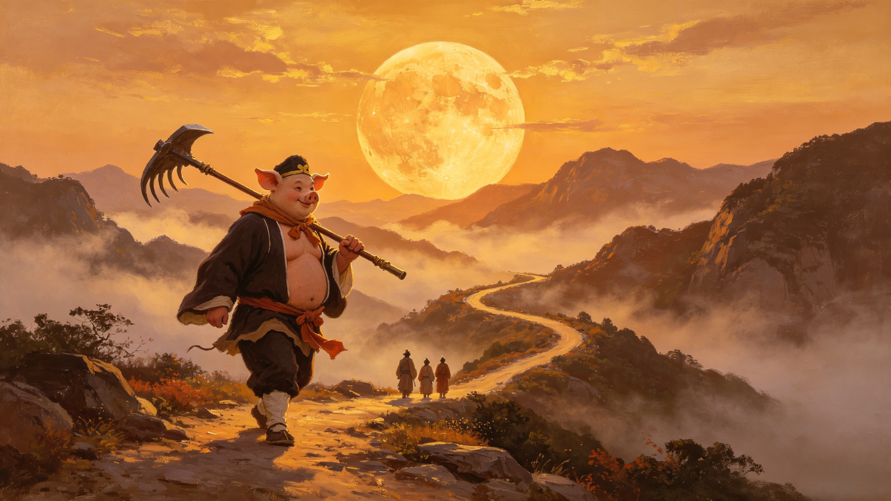
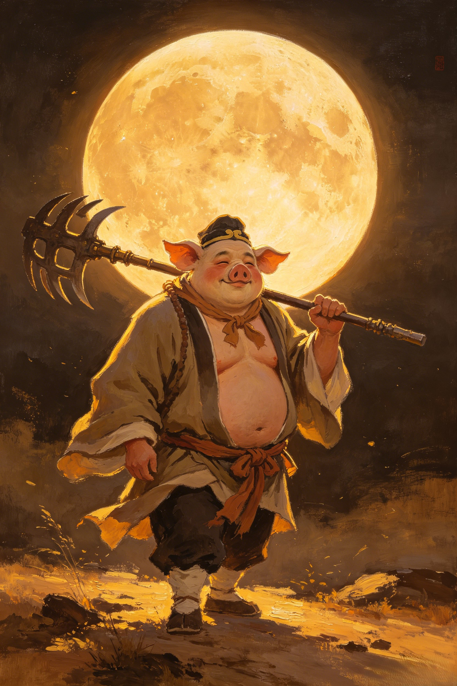

The Battle
The one battle where the pig was the hero. Eight hundred li of impossible water. A monster that could freeze rivers with a spell. And only one pilgrim who could fight where Sun Wukong could not.
The Tongtian River — "Heaven-Reaching River" — was no ordinary crossing. It stretched eight hundred li wide (roughly 400 kilometers), its currents so wild that even birds dared not cross its full width. When the pilgrims arrived at its banks, even Sun Wukong — who could somersault across the cosmos — understood that water was not his element. The Monkey King's combat strength diminished by half beneath the surface. Tang Sanzang could only pray. Sha Wujing could fight in water but lacked Bajie's commander instincts. And so, for the first time on the pilgrimage, the fate of the journey fell to Zhu Bajie — the fallen marshal who had once commanded 80,000 sailors of the Heavenly River.

The pilgrims discovered a nearby village in mourning. Each year, the river monster — calling itself the Inspiration King (灵感大王) — demanded a boy and a girl as offerings. In return, he would keep the waters calm. This year, it was the village headman's own children. Sun Wukong, ever the trickster, proposed a plan: he would transform into the boy, and Zhu Bajie would transform into the girl. They would be presented at the monster's temple. Bajie — never enthusiastic about any plan that involved danger — grumbled mightily about this assignment. But when the night came, he played his part. His disguise was so convincing that when the monster arrived to claim his "prize," it was Bajie's rake that greeted him instead.
Enraged by the ambush, the Inspiration King retreated to his underwater lair and devised a cruel revenge. He called upon a spell that froze the entire Tongtian River solid in the middle of summer. Snow fell. The air turned bitter. The pilgrims, trapped on the wrong side of the river with no food and no way forward, watched as the impossible happened. Then Tang Sanzang, in his infinite naivety, saw the frozen surface and believed it was divine providence — a path across. Against Bajie's protests, the monk stepped onto the ice. The moment he reached the center of the river, the ice shattered. Tang Sanzang plunged into the freezing water, and the Inspiration King seized him, dragging him to the bottom of the river palace. The pilgrimage had lost its heart.
Sun Wukong could not fight underwater. He could hold his breath, cast water-repelling charms, and swing his staff — but every movement was sluggish, every strike at half-strength. He looked at Zhu Bajie. And Zhu Bajie, for the first time since his banishment, remembered who he was. Taking Sha Wujing with him, the former Marshal Tianpeng dove into the river and transformed the water into his battlefield. Together, Bajie and Sha Wujing fought the Inspiration King for two full hours underwater — a marathon of aquatic combat. The nine-toothed rake, forged by Laozi himself for a naval commander, was in its element. Bajie attacked with precision, fury, and the muscle memory of thousands of years commanding celestial sailors. He drove the monster back. He would have beaten the creature outright — but the Inspiration King barricaded himself in the deep palace and refused to emerge.
For one battle, Zhu Bajie was not the comic relief. He was not the coward hiding behind Sun Wukong. He was the commander who had once sailed the Milky Way — and in the water, even the Monkey King deferred to him.
With the monster sealed in his underwater palace, Sun Wukong went to seek help. He found Guanyin, the Goddess of Mercy, who listened to his report with an expression of faint embarrassment. She walked with him to the river's edge, carrying nothing but a bamboo basket woven with lotus flowers. She lowered the basket into the water and spoke a single verse. Moments later, a goldfish — shimmering and magnificent — leaped into her basket. The Inspiration King, the terror of Tongtian River, the monster who froze rivers and demanded children's lives, was Guanyin's escaped pet goldfish. It had snuck away from her lotus pond, found the river, and set itself up as a minor god. The battle that nearly ended the pilgrimage — the battle that saw Zhu Bajie reclaim his lost glory — was caused by a fish from a goddess's garden pond. Guanyin carried it away in her basket. The ice melted. The river returned to summer. And the pilgrims crossed to the far shore — with Bajie walking a little taller than before.
Dive Deeper